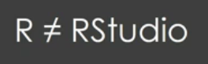

Downloading R & RStudio
One thing to Keep in mind is that

RStudio provides a better GUI to work on R
Download R at
(Windows) :
https://cran.r-project.org/bin/windows/base/(Linux) :
https://rstudio.com/products/rstudio/download/Download R studio at:
https://rstudio.com/products/rstudio/download/